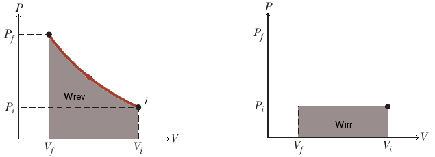

Lavoro reversibile
Il più comune tipo di lavoro consiste in un cambiamento di volume del sistema, parliamo dunque di lavoro di tipo espansivo o lavoro P-V. Consideriamo un sistema costiuito da un gas contenuto all'interno di un cilindro dotato di pistone:

sia P la pressione del gas, x la posizione del pistone. Quando la pressione esterna Pext, è uguale a quella interna P del gas, il sistema è all'equilibrio. Quando invece la Pext è maggiore di P, il pistone si sposterà di una distanza x, in modo da diminuire il volume del sistema, e incrementare P sinchè non sarà uguale a Pext.
Immaginiamo che la pressione esterna sia di un infinitesimo maggiore di quella interna:

In questo caso ci sarà uno spostamento infinitesimo dx del pistone tale da comprimere il gas, sinchè il gradiente di pressione non sarà svanito. . Il lavoro è definito come forza per spostamento, abbiamo quindi

essendo la pressione definita come:

con A la sezione trasversale del cilindro.

Possiamo fare un'approssimazione e dire che Pext ≊ P, si ha allora un lavoro pari a:

3.8
quando si compie lavoro sul sistema, avviene una compressione, quindi dV è negativo e il lavoro risulta positivo. Contrariamente quando è il sistema a compiere lavoro, si ha un'espansione, dV è positivo e il lavoro è negativo.
Per il momento abbiamo considerato una singola trasformazione infinitesima. Supponiamo di eseguire un numero infinito di trasfromazioni infinitesime tramite variazioni infinitesime della pressione esterna. Immaginiamo che il pistone comprima il gas in maniera quasi-statica, ossia talmente lentamente da permettere al sistema di rimare all'equilibrio per tutta la trasformazione, quindi Pext ≊ P. Il lavoro complessivo eseguito durante la trasformazione, è la somma del lavoro effettuato a ciascun passaggio. A ciascun passaggio il volume cambia di un dV e il lavoro effettuato è -PdV, con P il valore corrente di pressione del sistema. Il lavoro complessi si ottiene integrando la (3.8):

L'area ombreggiata nella figura sottostante rappresenta il lavoro reversibile, effettuato comprimendo il gas.

Un processo reversibile è un processo in cui il sistema è sempre infinitesimamente vicino all'equilibrio ed una trasformazione infinitesima è in grado di riportare sia il sistema che l'ambiente alle condizioni iniziali.
Lavoro irreversibile: espansione contro una pressione costante
Adesso supponiamo che la pressione esterna, rimanga costante durarante tutta la trasformazione. Dalla (3.9) possiamo portare la pressione fuori dal segno di integrale poichè rappresenta una costante, ed ottenere:


il lavoro risulta uguale all'area marcata in grigio. Tale processo risulta irreversibile, non è dunque possibile invertire il processo e tornare allo stato iniziale.
Espansione libera
Per espansione libera intendiamo un'espansione contro una forza opponente nulla, quindi Pext=0. Di conseguenza w=0.
Lavoro reversibile e irreversibile a confronto
Mettiamo a confronto i due tipi di trasformazione reversibile ed irreversibile, considerando la trasformazione che coinvolge un gas ideale. Calcoliamo il wrev compiuto da un gas ideale quando questo si espande da un volume V1 ad un volume V2 a temperatura costante. Supponiamo che in tale passaggio la pressione passi da un valore P1 ad uno P2. Se nella (3.8) sostituiamo la pressione data dall'equazione di stato dei gas idali

si ottiene

quindi:

consideriamo adesso un'espansione isoterma irreversibile dallo stato iniziale V1 e P1 a quello finale V2 e P2. Attuiamo la trasformazione diminuendo repentinamente la pressione da P1 a P2 senza che ci sia un'apprezzabile variazione di volume e poi facciamo espandere il gas contro la pressione P2. Il lavor compiuto sarà

Confrontando il lavoro nei due tipi di trasformazione si ha che

come illustrato dalla figura sottontante:
Questo risultato sta a significare che l'energia che è possibile estrarre da un sistema attraverso una trasformazione reversibile è maggiore di quello che si può ottenere tramite una trasformazione irreversibile. Anche se avessimo utilizzato un altro tra i processi irreversibili possibili per portare il sistema tra gli stati iniziali e finali il risultato sarebbe stato identico.
In generale, tra tutte le possibili trasformazioni che un sistema può compiere per passare attraverso due stati, quello reversibile comporta il massimo lavoro possibile.